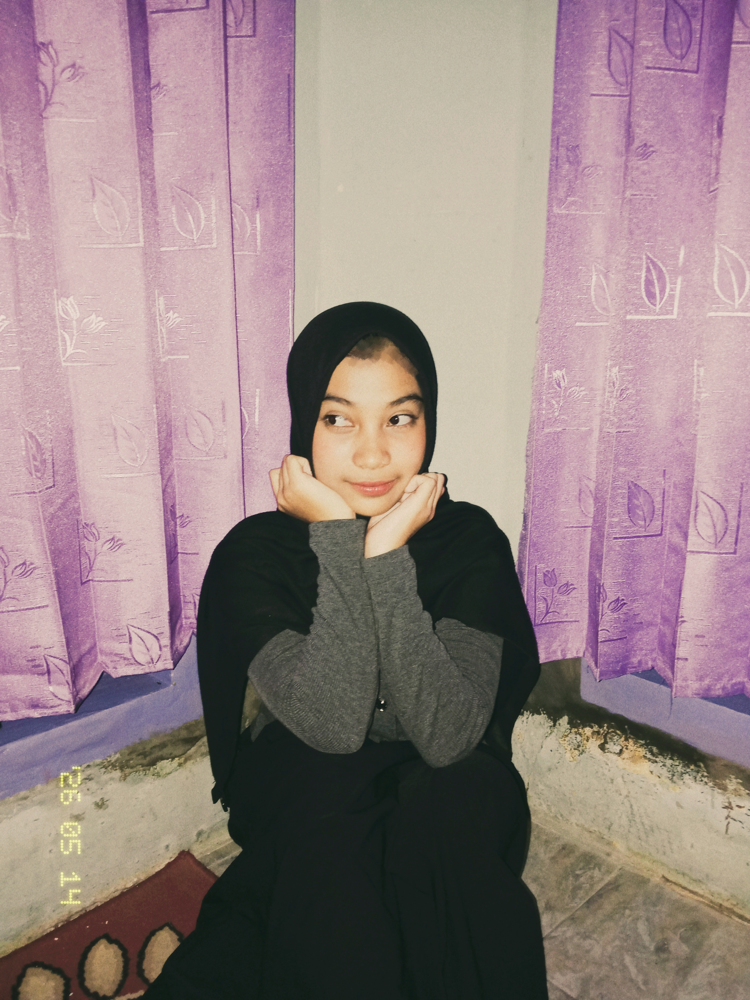

Siswi SMK | Pengembangan perangkat lunak dan gim
Selamat datang di halaman portofolio sederhana saya. Saya senang belajar hal baru dan membangun halaman web yang menarik.
hubungi sayaSaya seorang siswi SMK yang sedang menempuh pendidikan di SMKN 1 CIAMIS.
Saya suka Kpop.
Nama lengkap: Ratna Sintya
Tempat, Tanggal lahir: Ciamis, 04 Maret 2009
Jenis kelamin: Perempuan
Agama: Islam